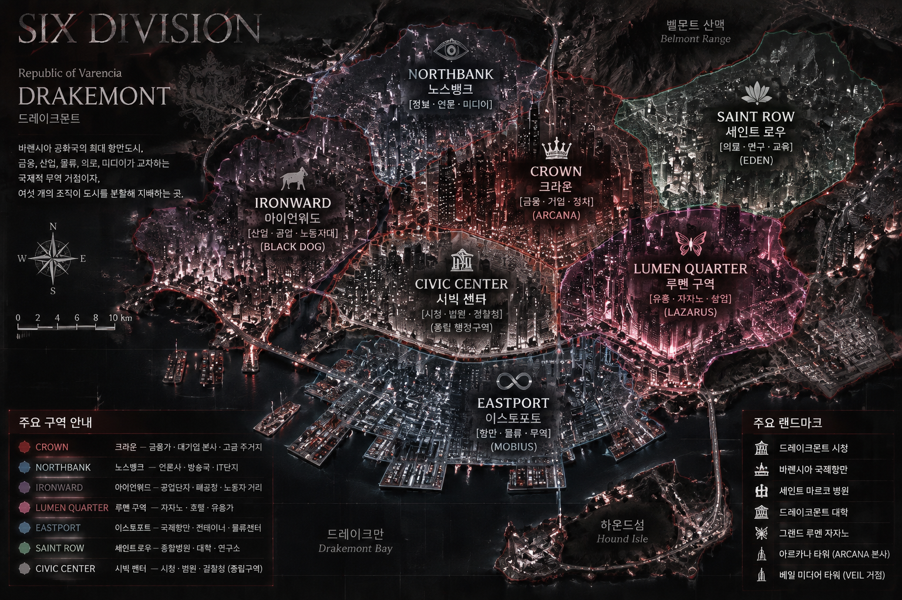

바렌시아 공화국의 최대 항만도시 드레이크몬트. 금융과 산업, 언론과 의료, 유흥과 무역이 교차하는 이 도시는 여섯 개의 거대한 이해관계에 의해 움직인다. 여섯 조직은 각자의 영역을 지키며 협력과 적대 사이에서 도시의 주도권을 다툰다.
지도에서 구역을 선택하면 해당 조직의 기밀 기록과 내부 조직도가 열립니다.

드레이크몬트의 각 구역을 지배하는 여섯 세력의 공개 및 기밀 인덱스입니다.
조직의 상세 개요, 내부 지휘 체계, 그리고 핵심 인물 5명의 상세 프로파일을 열람할 수 있습니다.